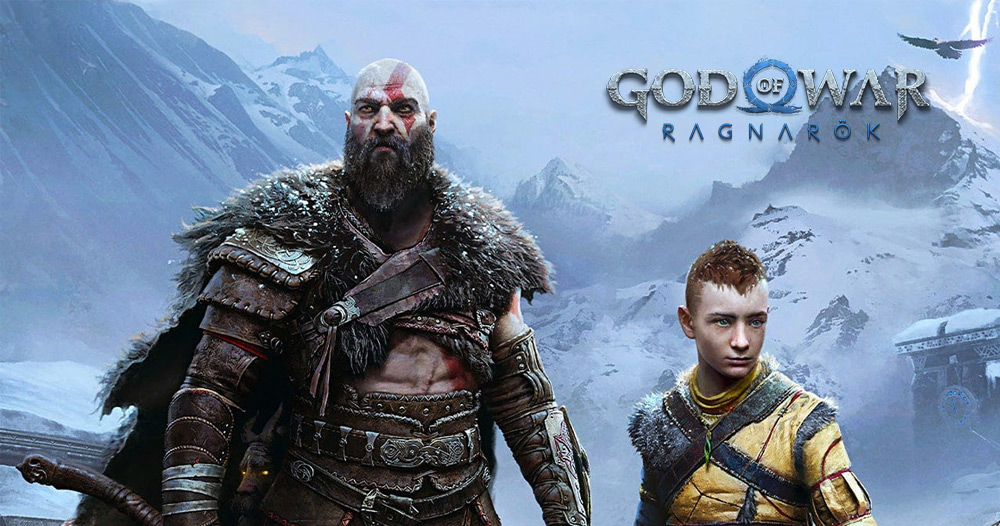

Things I'm Interested In
Gaming
GTA V and God of War: Ragnarok are not just games but profound passions that captivate me on multiple levels. GTA V's sprawling open-world of Los Santos is a dynamic playground that invites endless exploration and discovery. It seamlessly blends biting satire with high-octane action and diverse gameplay mechanics, offering players the freedom to carve their own path in a richly detailed urban landscape. From heists to car chases, the game immerses me in thrilling scenarios that challenge my strategic thinking and reflexes. On the other hand, God of War: Ragnarok delves into the mythic realms of Norse mythology with a compelling narrative centered around Kratos and Atreus. The game captivates with its stunning visuals that breathe life into majestic landscapes and fearsome creatures from Norse lore. As Kratos and Atreus navigate their complex father-son relationship amidst gods and monsters, the game weaves a tapestry of deep emotions and profound storytelling. Its combat mechanics, blending brute strength with tactical finesse, keep me engaged and constantly striving for mastery.

Music
You appreciate emotive and soulful music deeply. SZA's 'The Weekend' immerses listeners in its soul-stirring melodies and introspective lyrics, exploring themes of love, longing, and the intricacies of human connection. The song's evocative storytelling unfolds like a personal diary, inviting listeners to navigate the complexities of modern relationships with raw honesty and vulnerability. In contrast, Bruno Mars' 'Talking to the Moon' resonates with its powerful vocals and poignant narrative of solitude and yearning. Through heartfelt lyrics and a soulful delivery, Mars captures the essence of loneliness and the ache of longing for someone beyond reach. His emotive performance paints a vivid picture of late-night conversations with the moon, expressing a deep-seated desire for connection and understanding.